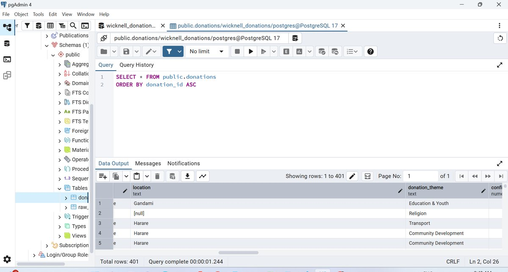

One day I wanted a project to strengthen my automation, AI and SQL skills. Instead of downloading a ready-made dataset, I asked myself:
Could I build a system that identifies and structures donation announcements directly from public social media posts?
That led me to study public philanthropy posts shared by Zimbabwean businessman Wicknell Chivayo on X. I built an automated pipeline with n8n, TwitterAPI.io, an LLM, and PostgreSQL, then loaded it into a SQL Server warehouse feeding Power BI.

How the workflow works
It runs every day at 9:00 AM. TwitterAPI.io retrieves new posts, and n8n manages each stage:
- Store original posts in PostgreSQL.
- Retrieve unprocessed posts and use an LLM to decide whether each is donation-related.
- Extract recipients, beneficiaries, donation types, quantities, amounts, currencies, purposes, locations and dates.
- Separate cash from vehicles, property, equipment and other giving.
- Store the records and mark every evaluated post as processed.
Unique tweet IDs control duplicates. Tracking processed posts prevents repeat classification and extra API cost.

Bronze, silver, gold
One PowerShell command exports from PostgreSQL and loads a SQL Server warehouse through bronze (raw), silver (clean, typed, enriched) and gold (star-schema views for Power BI). Each run writes a load log and stops before reporting if a step fails, so the dashboard keeps its last good data. New donations are sorted into money / vehicle / house / other by SQL rules that agree with manual review about 96% of the time.

Challenges
The project meant working through API pagination, duplicate records, inconsistent dates, AI timeouts, missing values, and donations with multiple recipients or quantities — which made reliable extraction and record tracking essential.
Technologies: n8n, an LLM, TwitterAPI.io, PostgreSQL, SQL Server, Power BI. An independent learning project based on publicly available information; AI-extracted records require validation and are not independently verified financial figures.